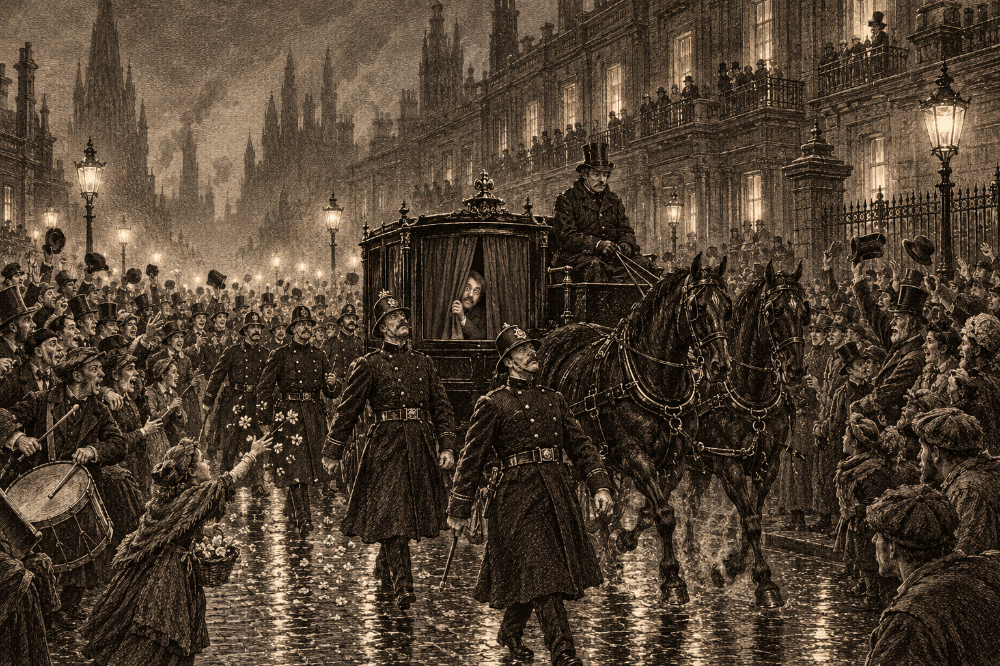

Brightstone, the evening of the 27th, as sketched by our artist. His Majesty is not pictured.
For the better part of an hour on the evening of the 27th, the Immortal Emperor rode through Brightstone in a black carriage with the curtains drawn. Several hundred citizens believed so, at any rate, and so, it appears, did the Bluecoats.
The city has spoken of little else this week. Nobody can say where the rumor started, and its versions do not agree: His Majesty arrives by sealed ship; he is already here, lodging in plain clothes; he has come to inspect the lightning barriers, or to settle accounts. One version, told only in Brightstone and only in lowered voices, holds that the visit concerns a certain old and very private house with which His Majesty is said to have business. Asked which house, the teller only smiled.
So when an unmarked carriage in black lacquer turned onto the boulevard near the eighth bell, curtains shut tight, a Bluecoat sergeant took one look and ordered his men to form up around it. Other patrols, seeing the first, fell in behind. A crowd gathered to see what the Bluecoats were guarding, and then followed it. Somebody produced a drum. By the time the carriage reached the upper boulevard, it was a parade.
The carriage stopped at a modest townhouse. The door opened. Out stepped not His Majesty but a gentleman of Brightstone known to this correspondent, calling on a lady who is not his wife. He took in the crowd, the drum, and the sergeant at full salute, went the color of a boiled crab, and got back in. This paper will withhold his name. We cannot speak for his wife. “I kept telling them,” said his coachman. “Nobody asked me.”
The parade had dispersed within the hour. The facts remain few: the harbor office has registered no Imperial vessel, the Lord Governor’s office “has nothing to announce at this time,” and the Spirit Wardens, who answer to the Emperor alone, are “unaware of any such visit.” The Bluecoats, meanwhile, remain on the boulevards in fresh coats. A Crow’s Foot shopkeeper, asked whether the street felt safer since the Tarred Feather, laughed. “Two weeks ago they were on every corner here, asking questions. Now you can’t find one.”
A Note on Distinguished Visitors
The Emperor has not set foot in Doskvol in living memory. If His Majesty is coming, we hope someone has told the Bluecoats where to stand. If he is not, then somewhere in this city a single sentence, spoken once and in passing, has done more work this week than the entire watch.
We would very much like to know whose sentence it was.
In No. 34 of this paper, under the headline “Crow’s Foot Tavern Erased!”, the Courier printed remarks attributed to an officer of the Spirit Wardens at the cordon of the Tarred Feather.
The Courier has since been informed by the office of the Wardens that the officer concerned was not authorized to speak, that the remarks did not reflect the Wardens’ findings, and that they should not have been printed. The Courier withdraws them in full, and apologizes to the Wardens and to the officer.
The Courier further withdraws the speculation, printed in the same article, connecting the matter at the Tarred Feather to events in Silkshore.
We have been asked to assure our readers that the matter is well in hand. There is no cause for alarm. Everything is fine.
This notice is printed at the request of the Spirit Wardens.
The seal of the Spirit Wardens, as it appeared on the letter received by this office.